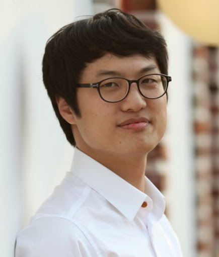
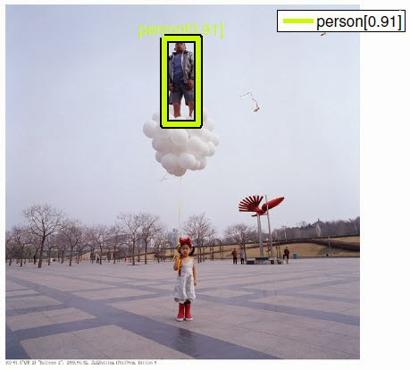

 |
My research interests focus on building secure AI systems.
Now, I am a Ph.D. student of University at Pennsylvania under the supervision of Professor Insup Lee. I got my M.S. degree in EECS from Seoul National University in 2012 and academic advisor was Professor Kyoung Mu Lee. I have a B.S. degree in CS from Seoul National University in 2010 and my mentors were Professor Byoung-Tak Zhang and Professor Jehee Lee. Email: sangdonp@cis.upenn.edu |
Projects
Publications
Conference
|
Resilient Linear Classification: An Approach to Deal with Attacks on Training Data Sangdon Park, James Weimer, and Insup Lee ICCPS 2017 (submitted) |
|
|
Integrated Intelligence for Human Robot Teams Jean Oh, Thomas Howard, Matthew Walter, Daniel Barber, Menglong Zhu, Sangdon Park, Arne Suppe, Luis NavarroSerment, Felix Duvallet, Abdeslam Boularias, Oscar Romero, Jerry Vinokurov, Terence Keegan, Robert Dean, Craig Lennon, Barry Bodt, Marshal Childers, Jianbo Shi, Kostas Daniilidis, Nicholas Roy, Christian Lebiere, Martial Hebert, and Anthony Stentz ISER 2016 |
|
|
 |
Abnormal Object Detection by Canonical Scene-based Contextual Model Sangdon Park, Wonsik Kim, and Kyoung Mu Lee ECCV 2012 Project PDF |
Thesis
- Sangdon Park, "Abnormal Object Detection by Transformed-Canonical Scene Generation," M.S. thesis, Seoul National University, Aug. 2012. (Distinguished Dissertation Award)
- Sangdon Park, "Behavioral Intelligence for Crowd Avatar in 3D Virtual Worlds," B.S. thesis, Seoul National University, Feb. 2010.